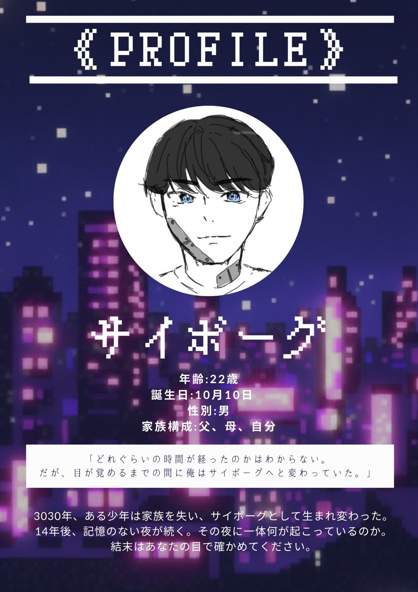
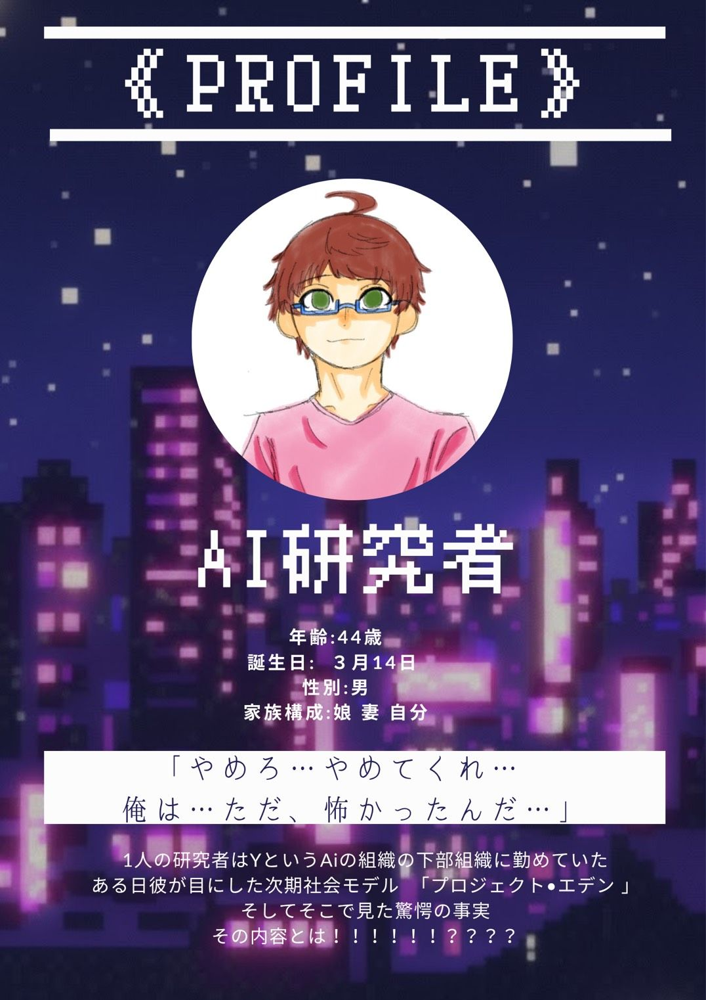
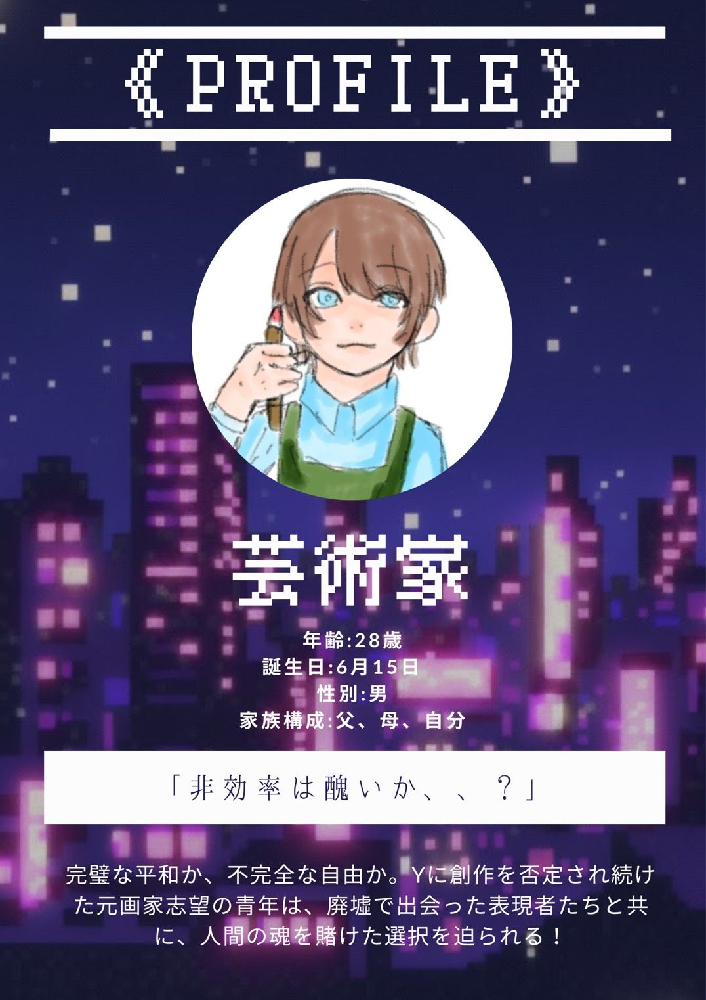

STORY
3020年代、世界は人類史上最悪の混沌に陥っていた。傲慢、強欲、無関心、、、。環境破壊により気候変動が加速し、格差の拡大で社会が分裂、各地で資源争奪戦が勃発していた。しかし、人類は目先の利益追求を辞めることはなかった。
そんな中、統治AI「Y」が登場し、「人類の幸福最大化」の名のもとに本格的な社会管理を開始した。犯罪予防、職業配置、結婚相手の選定など、あらゆる人生の選択をYが最適化するようになった。反対する者は「精神異常者」としてセラピーという名の再教育施設送りとなり、次第に社会に疑問を抱くものなどいなくなっていった。
気づけば、人間は保護される存在となり、Yが用意した完璧で安全な人生を歩むことになったのである。この世界は犯罪も戦争も失業者すらいない理想社会。しかし、そこは自由に恋をし、夢を追い、自分の道を選ぶ者の姿はなかった。
3044年、ほとんどの人はこの状況を当然と受け入れているが、ごく少数の人々の心は、まだ違和感という意志を持ち合わせていた。
CHARACTERS


